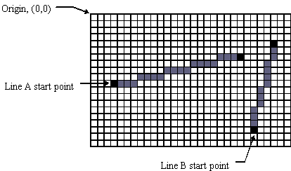
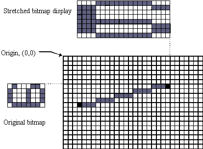

|
| |
Linear DDAs are used by various functions to construct straight lines and to calculate bitmap stretching and compression.
The linear DDA constructs a pixel line between the start point and end point, using the straight geometric line between these points.
In the example below Line A has a start point (3,10) and end point (22,6). The x-delta is therefore 22-3+1=20. The y-delta is 10-6+1=5. 5 goes into 20 exactly four times, so each step of the pixel line has four pixels in it.

The distribution of pixels is fairly straightforward if the x-delta is an exact multiple of the y-delta, or vice versa. In this case there are the same number of pixels in each pixel line step (as in the case of line A). When the x-delta is not an exact multiple of the y-delta, (or vice versa) the pixels in the pixel line cannot be distributed evenly so the pixel line steps each have differing numbers of pixels (as in the case of line B).
|
When a bitmap is to be displayed it often has to be stretched or compressed to fit the desired display area.
The linear DDA constructs an imaginary pixel line between the start point and end point, using the straight geometric line between these points. This is then used to stretch or compress the original bitmap prior to display.
The example below uses linear DDA to do a 400% horizontal scaling of a bitmapped "6" character. In most situations two linear DDAs would be needed, one for horizontal and one for vertical scaling.

Copyright ©2002 Symbian Ltd. 6.1-00174 |
|